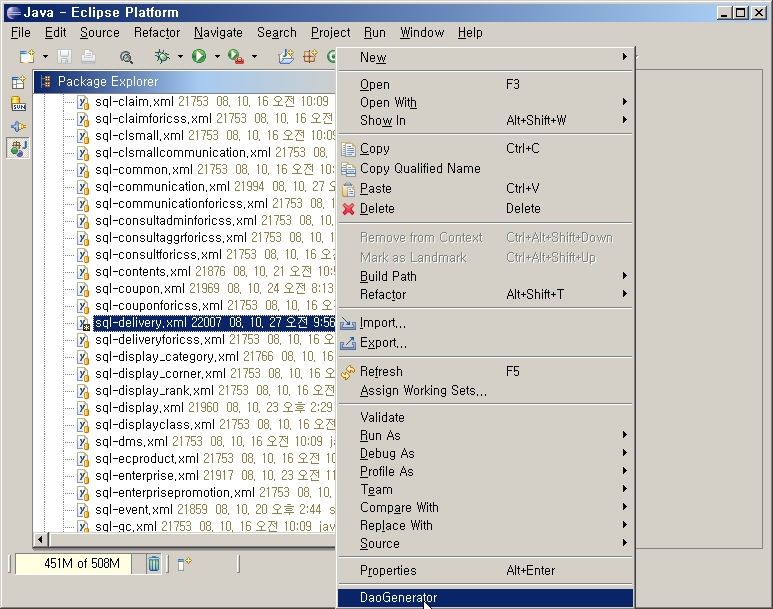

DaoGenerator Plugin
����/������ �ſ� ����ϰ� �ݺ��Ǵ� �۾��� �ϳ��� sql xml(sql-xxx.xml)�� �����ϰ� Java Soruce�ڵ带 ���ϴ� ���Դϴ�. ������ ����� ������ ���μ����� ����ǰ� �˴ϴ�. 1. sql-xxx.xml ���� 2. milti-lib�� build.xml ���� �Ǵ� runDaoGen.bat�� ���� 3. �ش� category �Է� 4. �ش� category�� package refresh �� Plugin�� ����ϸ� �ش� sql xml�� �����ϰ� Context Menu�� DaoGenerator�� Ŭ���ϸ� 2, 3, 4�� �۾��� ���ְ� �˴ϴ�. (���� Build automatically�� ���õǾ� ������ refresh�� �����ϵ� �˴ϴ�) ��ġ �� ���� 1. download 2. ������ Ǯ�� DaoGenerator_1.0.0.jar�� D:\interpark\shopping\eclipse\plugins�� ���� (������ DaoGenerator_1.0.0.jar�� ���� ��� eclipse ���� �Ŀ� ����) 3. eclipse restart 4. sql-xxx.xml Ŭ�� context menu DaoGenerator ���� 5. DaoGenerator Console view �α� Ȯ�� 